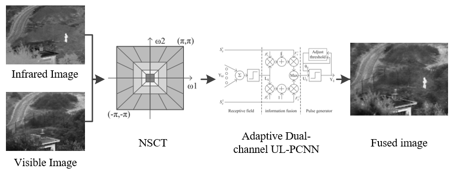
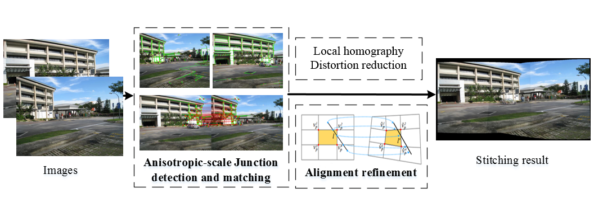
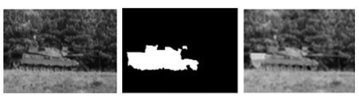
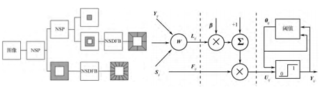
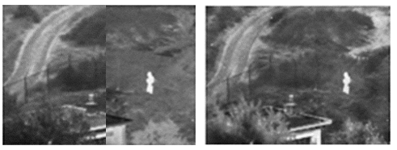
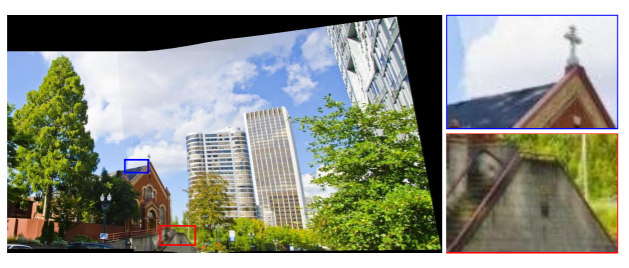
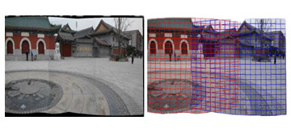
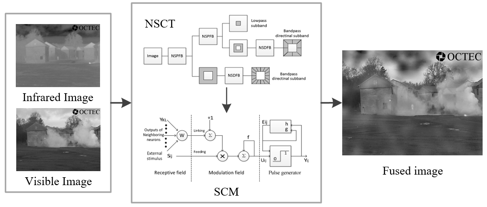

Tian-Zhu Xiang
Ph.D. candidate, CAPTAIN Group
LIESMARS, Wuhan University
Email: tzxiang@whu.edu.cn
I am currently a Ph.D. candidate in LIESMARS, Wuhan University, under the supervision of Prof. Gui-Song Xia & Prof. Liangpei Zhang. My current research concentrates on image/video alignment and stitching, computational photography, computer vision, etc.
 |
A Fusion Algorithm for Infrared and Visible Images Based on Adaptive Dual-channel Unit-linking PCNN in NSCT Domain. [PDF] T.-Z. Xiang, L. Yan, R. Gao. Infrared Physics & Technology, 2015, 69:53-61. |
 |
Image Stitching Based on Anisotropic-Scale Junction. [PDF] T.-Z. Xiang, N. Xue, G.-S. Xia, L. Zhang. Journal of Signal Processing, 2017, 33(4): 465-471. (in Chinese) |
 |
Region Feature Based Multi-scale Fusion Method for Thermal Infrared and Visible Images. [PDF] T.-Z. Xiang, R. Gao, L. Yan, Z. Xu. Geomatics and Information Science of Wuhan University, 2017, 42(7): 911-917. (in Chinese) |
 |
Multi-Scale Fusion of Infrared and Visible Images Based on PCNN. [PDF] T.-Z. Xiang, R. Gao, L. Yan. Journal of Geomatics Science and Technology, 2016, 33(3): 273-278. (in Chinese) |
 |
Fusion of Infrared and Visible Images Based on Edge Feature and Adaptive PCNN in NSCT Domain. [PDF] L. Yan, T.-Z. Xiang Chinese Journal of Electronics, 2016, 44(4): 761-766. (in Chinese) |
 |
Locally warping-based image stitching by imposing line constrains. [PDF] T.-Z. Xiang, G.-S. Xia, L. Zhang and N. Huang. IEEE International Conference on Pattern Recognition (ICPR): Cancun, Mexico, 2016.
|
 |
Image stitching with perspective-preserving warping. [PDF] T.-Z. Xiang, G.-S. Xia, L. Zhang. ISPRS Annals of Photogrammetry Remote Sensing & Spatial Informa, 2016, III-3. |
 |
Fusion of visible and infrared images based on spiking cortical model in nonsubsampled contourlet transform domain. [PDF] X. Liu, T.-Z. Xiang. IEEE International Congress on Image and Signal Processing (CISP), 2014:747-753. |
Copyright © 2017-2018, Tian-Zhu Xiang, Last modified: 2018.1.3